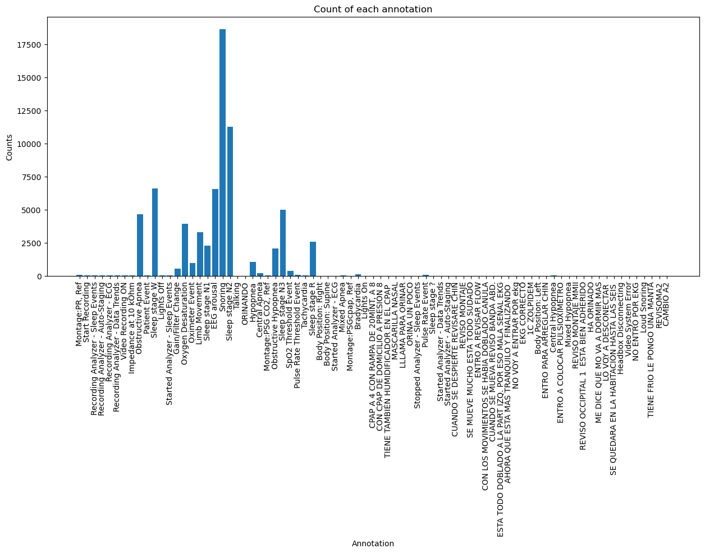

path_files = glob(os.path.join(path_data, "*.edf"))
len(path_files)36We are going to load all the files and check their .annotations attribute to extract the important ones:
It’s easier to understand the information if we represent it visually:
cntr = Counter(anns)
plt.figure(figsize=(15,6))
plt.bar(cntr.keys(), cntr.values())
plt.xticks(rotation=90)
plt.xlabel("Annotation")
plt.ylabel("Counts")
plt.title("Count of each annotation")
plt.show()
It can be usefull as well to store this information as a .csv: